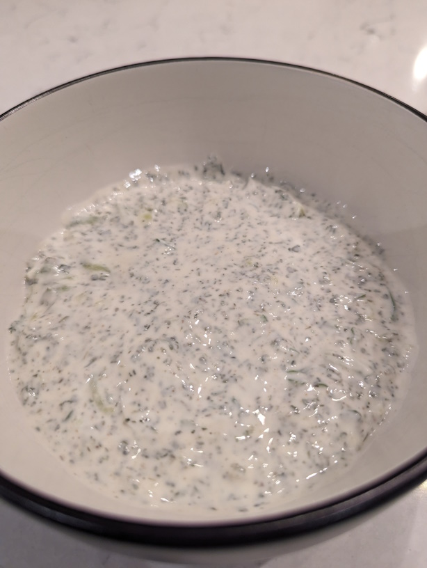

Mint Raita
 Vegetarian/Vegan
Vegetarian/Vegan

¾ cupmint leaves, fresh¼ cupcoriander leaves½ tspcumin powder½ tspsugar¼ tspsalt1¼ cupplain thick Greek yogurt1green chili, deseeded & finely chopped (optional)1 tsplemon juice
Rinse mint and coriander leaves and drain then finely chop both.
Press the grated cucumber in a sieve of folded teatowel to remove as much water as possible.
Whisk the yogurt until smooth. Then stir in the other ingedients. Taste test and add more salt if needed.
Chill until needed.